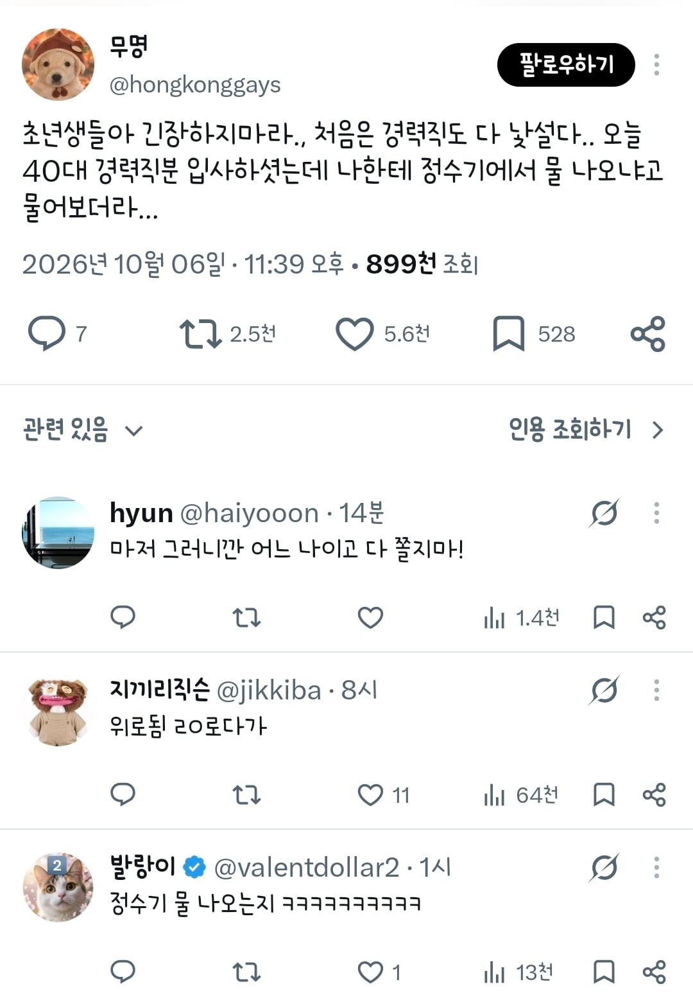
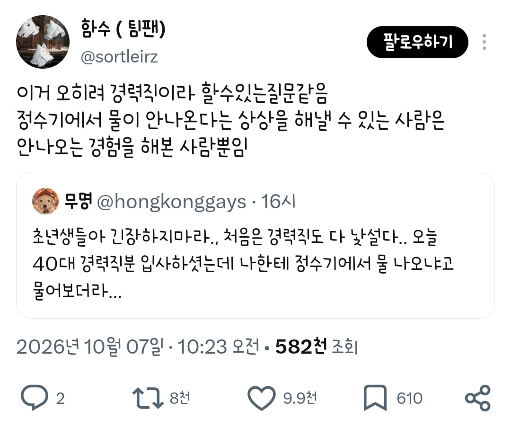
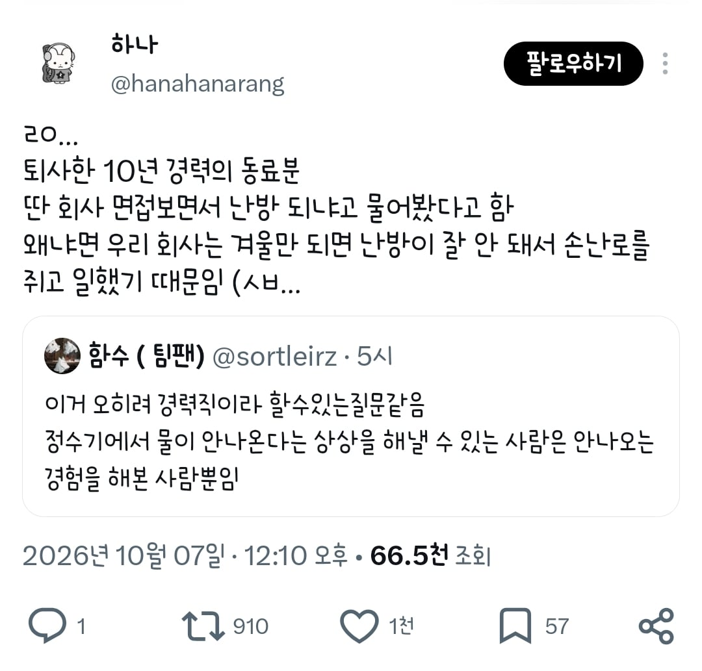

ㅇㄱㅈㅉㅇㅇ?



ㅇㄱㅈㅉㅇㅇ?
복지: 정수기 (디스플레이용)
ㅈ소 썰 보면 진짜 다이나믹 하다고 하던데...
냉난방 급수는 기본인데 그게 안되면 대체 뭐 하는 회사냐
첫째짤 딱 보자마자 병신이라 묻는게 아니라 정수기를 눌러도 물이 안나오는 상황 or 있는 정수기를 쓰면 안되는 상황을 겪어본거겠지... 함
렌탈끝난정수기 마지막 필터교체 39579일전
메모 물 안나오고 냉난방안되면 도망치자
첫 회사가 오피스텔에 여러업체 돌려쓰던곳이라 사무실이나 창고 있는지 물어봤었는데
우린 겨울에 온수나옴. 문제는 여름에도 나옴. 회사 옆에 발전소가 있어서 수돗물이 아니고 공업용수 나오는거라던데..
연차가있어요?
되는지 물어본다 < 안되는 곳에서 일해봤다
생각해보니까 ㅈㄴ 폭력적이자너 ㅋㅋㅋㅋㅋㅋ
회사 난방 돼요?
난방은 나도 겪어봄...
나도 생각나네 회사 팩스들어오는 소리에 전화받아서 네 어디어디입니다 이랬는데
다들 아무소리 안했지만 속으로 존나웃었겠지?
귀여움 한도 초과 부장님 뒤집어짐
경력이라 물어볼 수 있었네 ㅋㅋㅋㅋㅋㅋㅋㅋ
여기는 야근 몇시까지 해요?
저게 진짜라고?
회사 어려우면 정수기 물 끊긴다
독일은 회사에서 물 돈내고 마셔야한다며 ㅋㅋ
정수기는 진짜 하드하네 ㅋㅋㅋㅋㅋ
야간 택시비가 안나와요??
냉난방 아끼는회사는 진짜 ㅋ
돈을 넣어야 돌아가는 탕비실 전자렌지 짤도 본것같음ㅋㅋㅋ
근데 난방비 아낀다고 사무실 춥게 만드는게 웃긴게 그거 때문에 다들 개인 전기 히터 같은거 가져와서 킴ㅋㅋㅋㅋㅋ 이게 전기료 더 많이 나오것다
그런 좆소사장들이 근시안적인 병신이라는 증거지
화장실 없는곳도 가봄
입사 전에 좆소검증 질문 몇개 하는게 좋긴함 ㅋㅋ
본인 입사면접 보면서 물어본거
빨간날 쉬나요, 명절 쉬나요
우리회사... 작년 여름에 에어컨이 안나왔어 ㅋㅋㅋㅋㅋㅋㅋㅋㅋ
건물이 개병신이라 에어컨도 제대로 안나오는데 이사오면서 설치도 안하는 개병신짓 하는바람에 개고생함 ㅋㅋㅋㅋㅋ
나 2번째회사 면접볼때 퇴직금 포함인지 별도인지 물어봤는데, 면접관들이 아직도 연봉에 퇴직금 포함하는곳이 있냐고 놀라더라
물론 9년 전 얘기지만

사무실마다 정수기 있는지 유도심문
월급 밀린 적 있나요??
경력직이 참전용사였구나
졷소 경력자라는건
이름조차 아직 안붙은 밀림에서 맨몸으로 생환하고 ptsd에 시달리는 존재임
나도 에어컨 취직했는데 점심을 주길래 신기했음
처음 갔던곳은 식사라는 자체를 안했어서, 자영업하면서도 밥 안 먹었어가지고
여기는 밥먹을 시간을 따로주는구나 싶더라
월급디 제때 나와요?
정수기에서 물도 안나오는 ㅈ소의 삶은 무엇일까